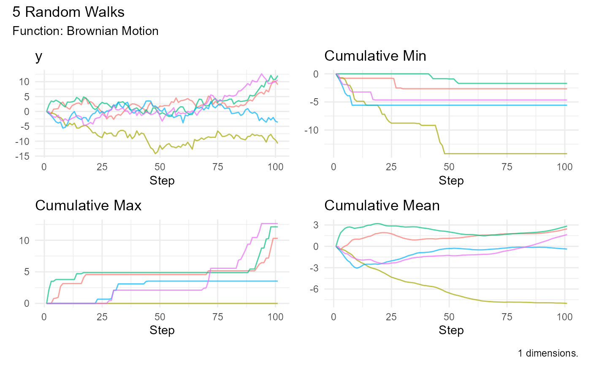

Create a Brownian Motion Tibble
Usage
brownian_motion(
.num_walks = 10,
.n = 100,
.delta_time = 1,
.initial_value = 0,
.return_tibble = TRUE
)Details
Brownian Motion, also known as the Wiener process, is a continuous-time random process that describes the random movement of particles suspended in a fluid. It is named after the physicist Robert Brown, who first described the phenomenon in 1827.
The equation for Brownian Motion can be represented as:
Where W(t) is the Brownian motion at time t, W(0) is the initial value of the Brownian motion, sqrt(t) is the square root of time, and Z is a standard normal random variable.
Brownian Motion has numerous applications, including modeling stock prices in financial markets, modeling particle movement in fluids, and modeling random walk processes in general. It is a useful tool in probability theory and statistical analysis.
See also
Other Generator Functions:
discrete_walk(),
geometric_brownian_motion(),
random_normal_drift_walk(),
random_normal_walk()
Examples
library(ggplot2)
brownian_motion()
#> # A tibble: 1,010 × 3
#> walk_number x y
#> <fct> <int> <dbl>
#> 1 1 1 0
#> 2 1 2 -1.40
#> 3 1 3 -1.14
#> 4 1 4 -3.58
#> 5 1 5 -3.59
#> 6 1 6 -2.97
#> 7 1 7 -1.82
#> 8 1 8 -3.64
#> 9 1 9 -3.89
#> 10 1 10 -4.13
#> # ℹ 1,000 more rows
brownian_motion() |>
ggplot(aes(x = x, y = y, group = walk_number, color = walk_number)) +
geom_line() +
labs(title = "Brownian Motion", x = "Time", y = "Value") +
theme_minimal() +
theme(legend.position = "none")
